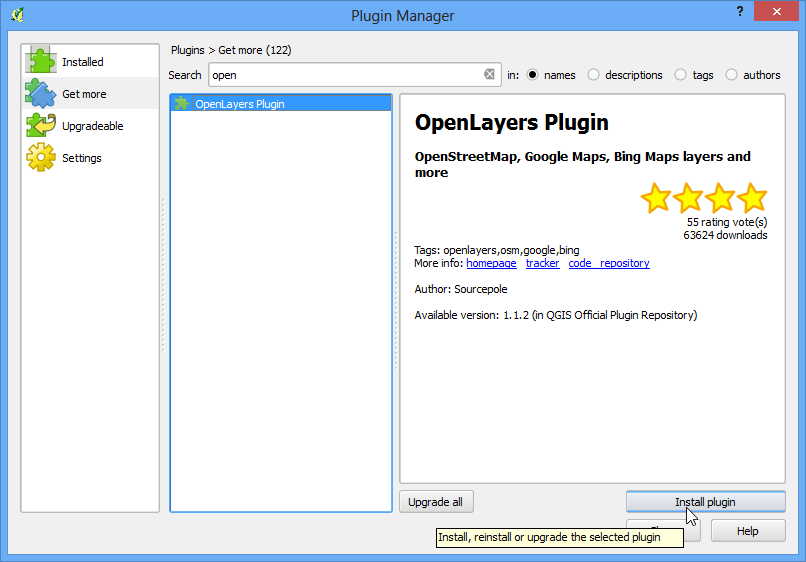
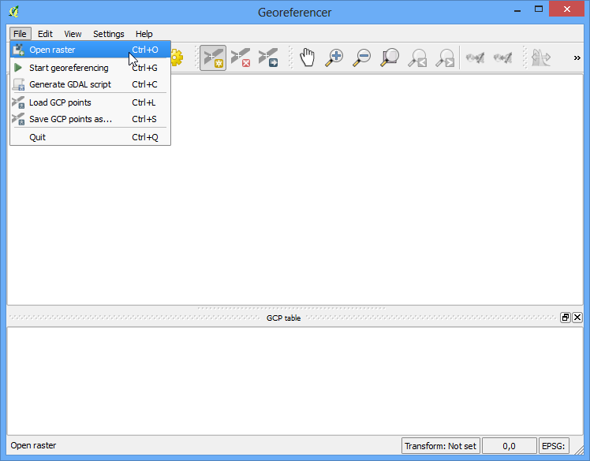
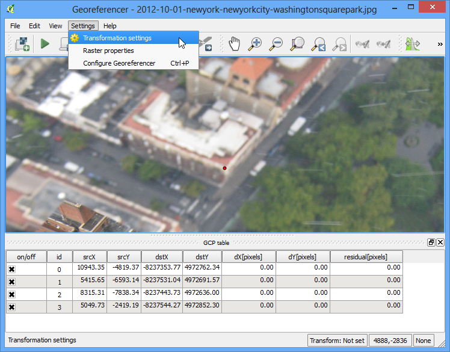
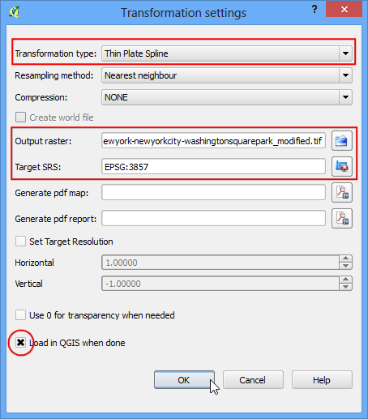

Прив’язування аерофотознімків
[ Download PDF
A4
Letter ]
В уроці Геоприв’язування топографічних листів та сканованих мап був розглянутий основний процес геоприв’язування в QGIS. Цей метод потребував зчитування координат із відсканованої карти і введення їх вручну. Але в багатьох випадках ви можете не мати координат, надрукованих на вашій карті, або ви намагаєтесь геоприв’язати зображення. В такому випадку ви можете використовувати інше джерело даних для геоприв’язки на вході. В цьому уроці, ви навчитесь як використовувати існуючі відкриті джерела даних в процесі геоприв’язування.
Огляд завдання
Виконаємо геоприв’язку зображення високої роздільної здатності, відзнятого за допомогою повітряної кулі, використовуючи координати для посилання із OpenStreetMap.
Додаткові навички
Завантажувати загальнодоступні знімки з високою роздільною здатністю.
Використання плагіну OpenLayers в QGIS.
Перерахунок координат між різними проекціями з використанням утиліти командного рядку cs2cs.
Використовувати існуючий шар із геоприв’язкою для введення опорних точок у інструменті Геоприв’язувач.
Встановлювати значення без даних для шару.
Отримання даних
В цьому уроці ми використаємо чудові знімки із повітряних зміїв і куль зібрані у The Public Laboratory. Вони також мають геоприв’язані версії зображень, але ми завантажимо не геоприв’язані JPG зображення і пройдемо процес геопри’язуваня їх у QGIS. Якщо вам сподобалися зображення, ви можете також переглянути їх у Google Earth.
Завантажте JPG зображення Вашингтонського Сквер Парту в Нью Йорку. Ви можете натиснути праву кнопку миші на кнопці JPG і вибрати Save link as....
Для зручності, ви можете безпосередньо завантажити копію набору даних за допомогою наведеного нижче посилання
newyorkcity-washingtonsquarepark.jpg
Виконання
Для цього уроку, ми використаємо шар із OpenStreetMap в якості шару для посилання. Встановіть плагін OpenLayers із меню . Дивіться Використання додатків для більш детальної інформації про те як використовувати плагіни в QGIS.

Після встановлення, перейдіть у меню . Ця дія додасть новий шар із попередньо візуалізованими плитками створеними з даних OpenStreetMap.

Тепер у вас є шар OpenStreetMap завантажений в QGIS. Вкажіть систему координат (СК) для вашого шару. Вибрана EPSG 3857 Pseudo Mercator. Це важливо вибрати, оскільки координати, які ми беремо з цього шару, будуть в цій СК.

Тепер задачею є знайти загальні околиці області, яку ми збираємося геоприв’язувати. Ви можете користуватися лише прокруткою і збільшенням аби знайти цю місцевість на шарі OpenStreetMap. Але ми можемо скористатися цією можливістю аби продемонструвати інший інструмент, який може допомогти в майбутньому. Ми знаємо, що зображення які ми завантажили є парком Вашингтон-сквер в Нью Йорку. Якщо ви пошукаєте це місце, ви зможете знайти сторінку вікіпедії про нього. Координати парку вказані там.

Ви помітите, що ті координати вказані Градусах/Хвилинах/Секундах і є широтою і довготою. Але оскільки наш шар створений в проекції Меркатор, нам потрібні координати Меркатора, щоб знайти парк. Ось де інструмент командної строки, що називається cs2cs буде корисним. Якщо ви встановили QGIS за допомогою інсталятору OSGeo4W, ви вже маєте його встановленим у вашій системі. У системах Linux і Mac також, він попередньо встановлений разом з QGIS. Запустіть вікно терміналу і наберіть cs2cs, щоб перевірити його наявність. Користувачі Windows можуть знайти термінал в меню .

Після того, як ви переконалися, що інструмент cs2cs існує у вашій системі, час перетворити відомі нам Широту і Довготу в координати Меркатора. Відповідно до того, як працює цей інструмент вам необхідно вказати source і destination СК. Визначення СК може бути рядок формату PROJ4 або код EPSG. Оскільки ми вже знаємо код EPSG для початкової і вихідної СК, ми використаємо їх. Найпростішим способом використання цього інструменту це задати вхідні координати в командний рядок самостійно. Зверніть увагу, що інструмент приймає координати в порядку X Y, тому нам потрібно ввести Довготу Широту. ведіть наступну команду в термінал і натисніть Enter. Зверніть увагу, що ми повинні перед лапками (”) вказати зворотній слеш (\). Коли ви натиснете Enter, ви побачите як оброблюються ваші координати і виводяться на екран вихідні X Y координати в EPSG 3857 СК.
echo "-73d59'51\" 40d43'51\"" | cs2cs +init=EPSG:4326 +to +init=EPSG:3857
-8237364.02 4972720.34 0.00

- Copy these coordinates and switch to QGIS. At the bottom of the QGIS window,
you will see a textbox labeled Coordinates. Enter the coordinates there in
X,Y form. Press Enter. You will see the map shift a bit, but not zoom. To
zoom to the area, select 1:2500 scale from the Scale drop-down next to the
Coordinate box and press Enter.

- Voila! you now see Washington Square Park area on your canvas. Now it is
time to start georeferencing. Launch the Georeferencer from
. If you do not
see that menu item, you will need to enable the Georeferencer
GDAL plugin from .

- In the Georeferencer window, go to . Navigate to the downloaded JPG file and click Open.

- In the Coordinate Reference System Selector,
choose EPSG:3857 Pseudo Mercator

- Now click on the Add Point button on the toolbar and select an easily
identifiable location on the image. Corners, intersections, poles etc. make
good control points.

- Once you click on the image at a control point location, you will see a
pop-up asking you to enter map coordinates. Click the button
From map canvas.

- Find the same location in your reference layer, i.e. the OpenStreetMap
layer and click there. The coordinates are auto-populated from your click
on the map canvas. Click Ok. Similarly, choose at least 4 points on the
image and add their coordinates from the reference layer.

Тепер перейдіть у меню

- Choose the settings as shown below. Make sure you the Load in
QGIS when done button is checked. Click OK. Back in the
Georeferencer window, go to . This will start the process of warping the image
using the GCPs and creating the target raster.

- Once the process finishes, you will see the georeferenced layer loaded in
QGIS. If all went well, you will see it nicely overlay the OpenStreetMap
layer.

- To make our output look nicer, let’s remove the black and white no-data
values. Right click on the image layer and choose Properties.

- Switch to the Transparency tab. We want to indicate that any
black or white pixels in the image are no-data values and should be made
transparent. Input 0 as the No data value. Also, in the
Custom transparency options, click the + button and
add 255 as the transparent pixels for each band and enter 100 as the
:Percent transparent. Click OK.

Тепер ви бачите, що ваше геоприв’язане зображення красиво перекриває базовий шар.

{kind=link}